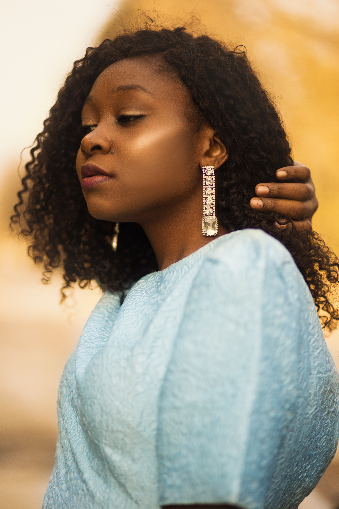
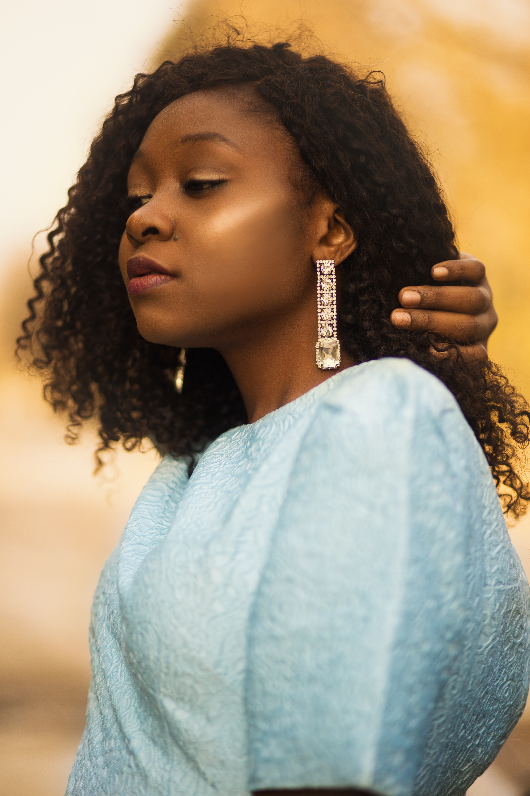

Fall Fashion


 



Have you ever had trouble finding the ideal fall wardrobe? My website is here to assist you, nevertheless. I want to introduce the ideal website where both men and women may shop for the comfiest, trendiest, and most exciting clothing. I believe having fall gear is crucial, especially if you reside in a region that gets chilly at that time of year. There aren't many websites dedicated solely to fashion and apparel that do this. For Halloween, Thanksgiving, and Christmas, I will have coats, shirts, pants, and shoes. additionally to other add-ons like belts, caps, and jewelry.
I'd like to provide the best online store where both men and women may purchase the coziest, trendiest, and most fascinating clothing. Through the use of accessories, clothing, footwear, lifestyle, make-up, hairstyles, and body position at a specific moment and location, fashion is a way of autonomous expression and self-determination. I intended to create a fall ensemble that would make both men and women feel assured, satisfied, and happy. People can find all of the aforementioned qualities on my website.